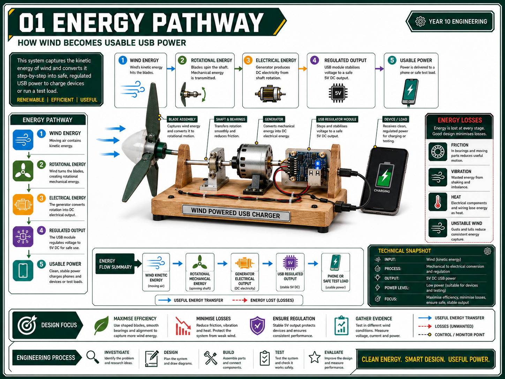
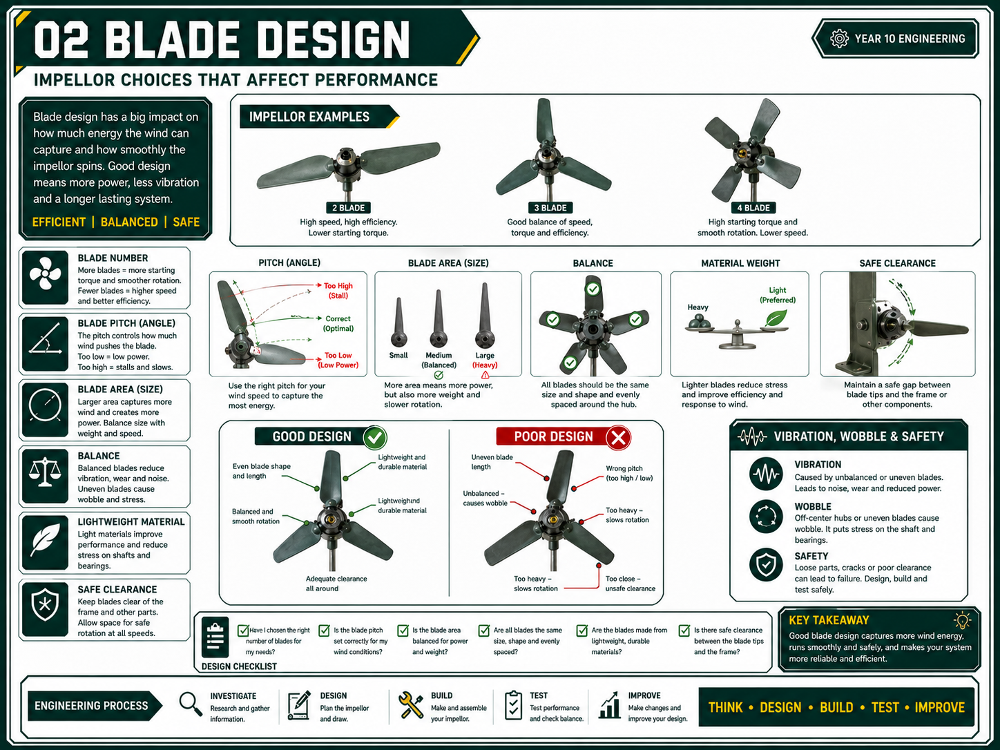
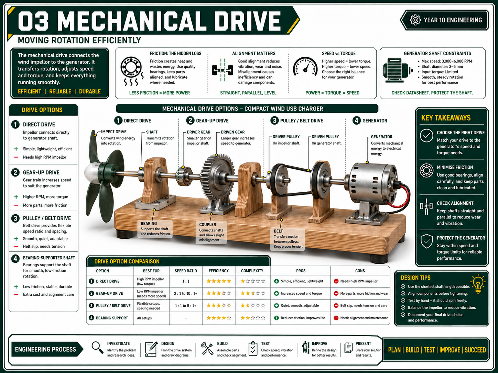
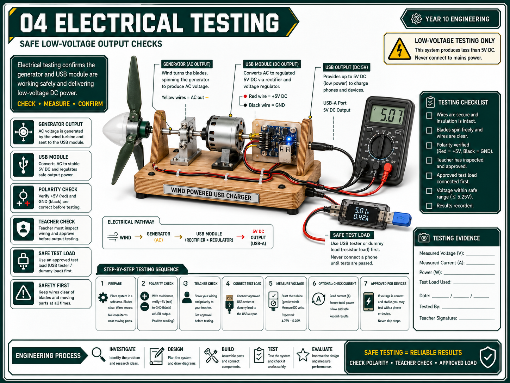
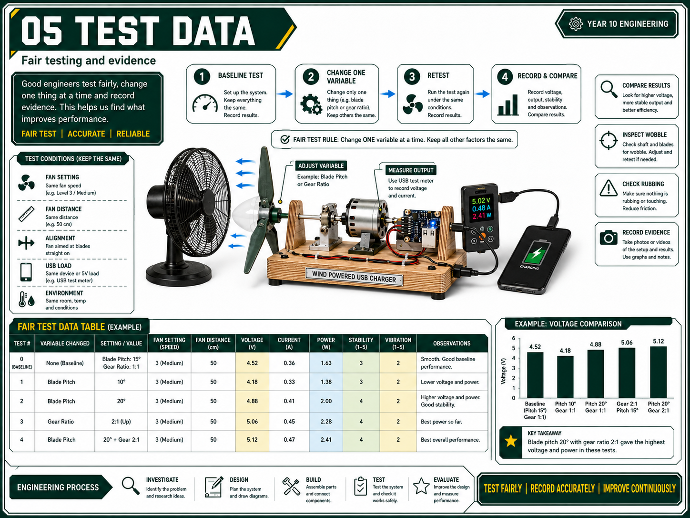

Wind Powered USB Phone Charger Info Sheets
Printable student sheets for the Year 10 Alternate Energy project.
Project focus
- Convert wind movement into electrical output.
- Design a compact impellor, frame and drive system.
- Connect and test the generator and USB module safely.
Evidence focus
- Energy pathway and labelled design.
- Blade tests, drive choice and build photos.
- Output data, fault log and evaluation.
Safety focus
- Secure rotating parts before testing.
- Teacher-check wiring before connecting USB loads.
- Keep hands clear of blades and gears.
1. Energy Pathway
Wind - rotation - electricity - USB
Student task
- Label each energy transfer in your own design.
- Circle two places where energy could be lost.
- Explain why the USB module is needed before connecting a device.
Folio sentence starter
My charger converts wind energy into _____, then into _____, before the USB unit _____.
2. Blade Design Variables
Fair test
Controlled variable table
| Variable changed | What stayed the same? | Result |
|---|---|---|
| Blade pitch | Fan distance, blade count, frame | |
| Blade count | Blade material, pitch, fan distance |
3. Mechanical Drive
Direct or geared
Decision notes
- Direct drive: fewer parts, less friction, simpler alignment.
- Geared drive: may increase generator rpm, but needs accurate meshing.
- Record wobble, slipping, binding and support problems.
4. Electrical Testing
Teacher check
Before testing
- Secure the impellor and frame.
- Check positive and negative wiring.
- Measure voltage before connecting a USB load.
- Stop if wires heat, parts wobble badly or the module behaves oddly.
Teacher check
5. Test Data and Evaluation
Evidence beats guessing
Evaluation prompts
- Which design had the best output?
- What fault limited performance the most?
- What evidence proves your final judgement?
- What would you change in the next version?